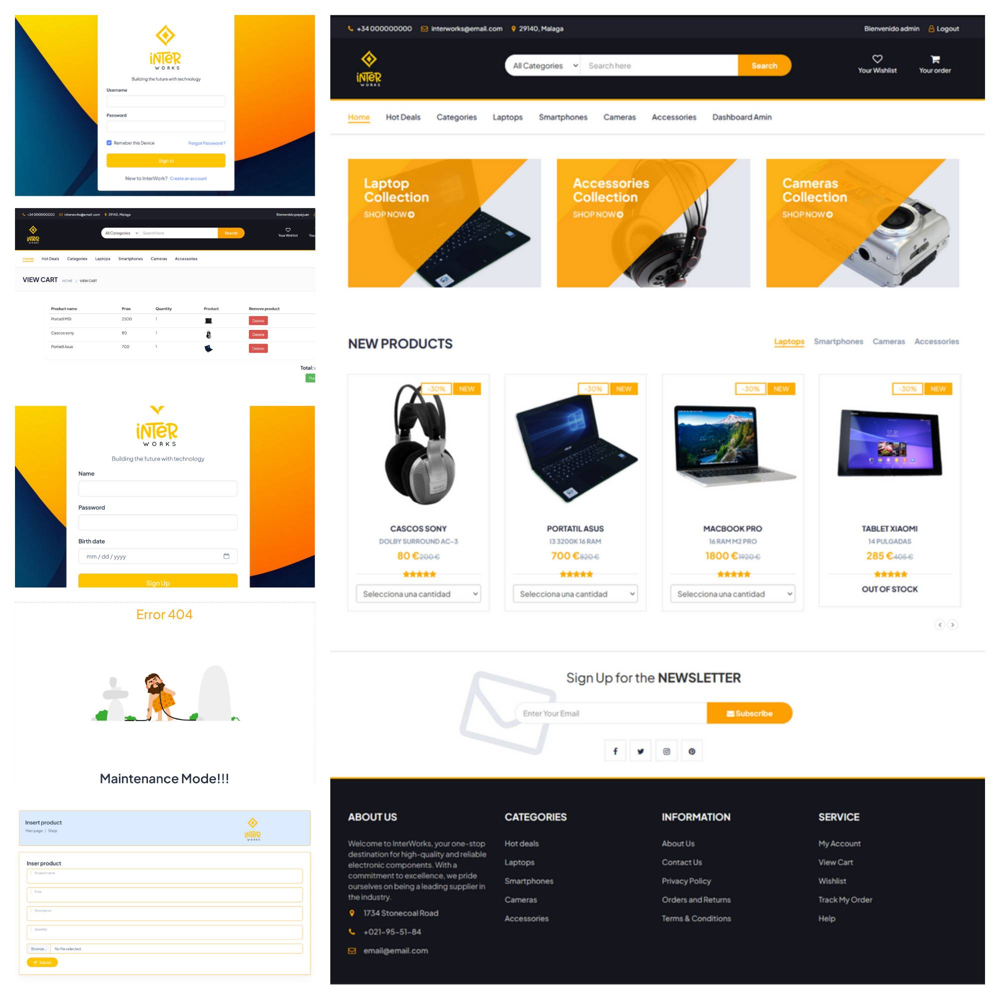
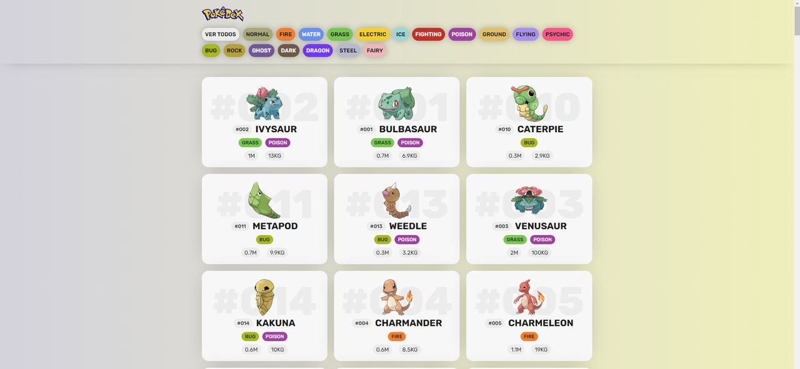

Portafolio
Proyecto 1
Juego de la Búsqueda del Tesoro Perdido realizado en clase de Programación como ejercicio complementario de arrays bidimensionales.

Proyecto 2
InterWorks-Web, tienda online completa realizada con php y bootstrap

Proyecto 3
El objetivo de este proyecto es practicar la obtención de datos de API y el uso de grid-template-columns.

El desarollador esta trabajando en esto.